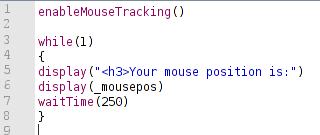

enableMouseTracking()
disableMouseTracking()
BoXS supports mouse tracking. In order to activate it, just use the enableMouseTracking()-command in your program.
Upon doing so, BoXS will create a variable named _mousepos in which the current mouse position is stored for each
subject. Also, when the input history is enabled (which it is by default), the history of the mouse position is stored
in the variable _inputhistory_mousepos.
Since a variable can only take a value up to a certain length, the BoXS will automatically truncate the mouse
history after some time. If you want to preserve the positions you need to store them in different variables
after certain time intervals. An example for doing this would be to write something like "mousehistory1=_inputhistory_mousepos"
and "_inputhistory_mousepos=0" after the first wait()-command.
The mouse position is stored as absolute screen position. The top left pixel of the screen would have the position (0,0), the top right point would be (1919,0) if the screen resolution is 1920x1200 and so on. If the BoXS client is not running full screen, you might need to transform the mouse position according to your requirements.
Depending on the system configuration, the mouse tracking will continue even if the BoXS client loses the focus, i.e. when other programs are used. Keep this in mind for internet experiments.
Examples
A simple example for using the mouse position
|

|

|